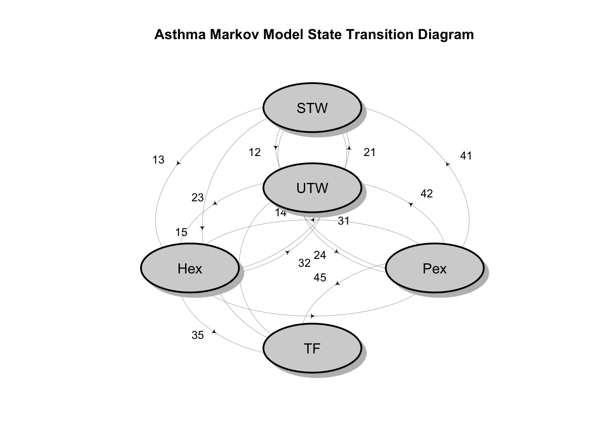
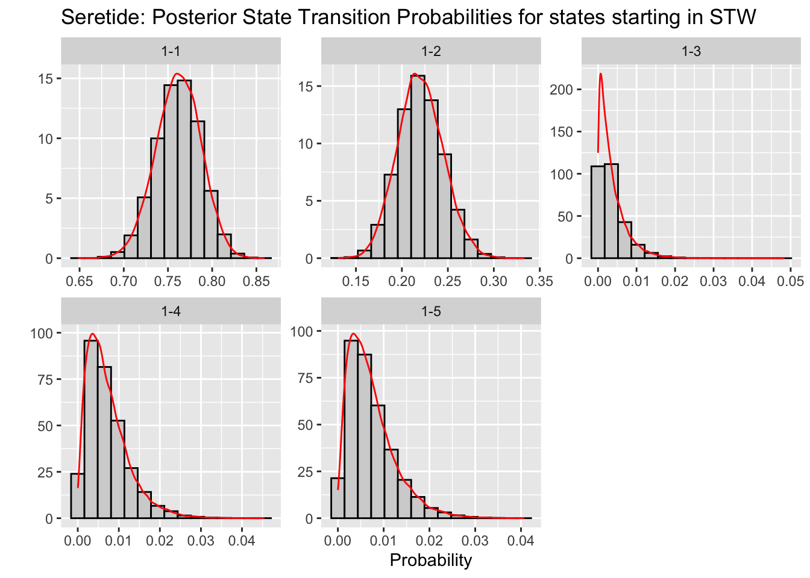
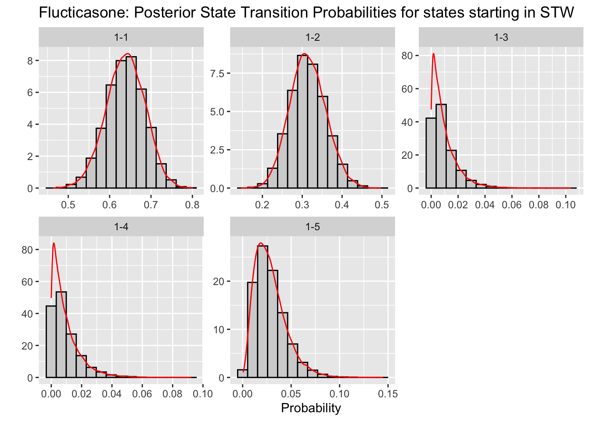
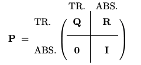
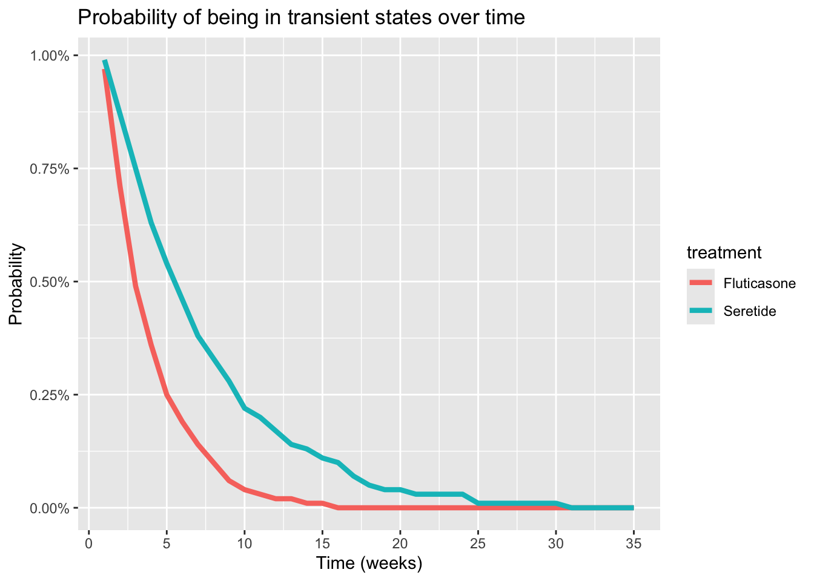

R packages
library('dplyr')
library('ggplot2')
library('stringr')
library('tidyverse')
library('matrixcalc')
library('LaplacesDemon') # for Dirichlet distribution
library('diagram')This post shows how to use a simple Bayesian model to estimate the transition probabilities of patients progressing through various health states in a randomized clinical trial comparing different treatments for asthma management. These probabilities are used to construct a discrete time Markov chain model. The post goes on to show how the basic theory of discrete time Markov chains can be to compare the effectiveness of two different treatments by estimating fundamental health metrics including the expected time spent in each health state, survival curves, and the expected time to treatment failure for each of the two treatments.
Although the theory is basic and the calculations are simple, variations of this model should be applicable to a wide range of problems in health economics and decision analysis.
library('dplyr')
library('ggplot2')
library('stringr')
library('tidyverse')
library('matrixcalc')
library('LaplacesDemon') # for Dirichlet distribution
library('diagram')# names for transition probabilities
trans_names <- function(x) {
transitions <- paste(x, "-", 1:5, sep = "")
return(transitions)
}
sim_res <- function(matrix,from_state, n_sims = 20000) {
# Bayesian simulation using Dirichlet conjugate prior
# matrix is the matrix of observed states
# from_state is the row index of the initial state
# n_sims is the number of simulations to run
priors <- matrix(rep(1, 20), nrow = 4) # Prior parameters for Dirichlet dist HERE
dist <- matrix[from_state, ] + priors[from_state, ]
res <- rdirichlet(n_sims, dist)
colnames(res) <- paste(from_state, "-", 1:5, sep = "")
return(res)
}
smry <- function(res_matrix){
apply(res_matrix, 2, function(x) {
c(mean = mean(x),
lower = quantile(x, probs = 0.025),
upper = quantile(x, probs = 0.975))
})
}
# Function to compute the probability of being in each state at time t
prob_at_time <- function(matrix, time, i_state){
u <- i_state
index_eq_1 <- which(u == 1)
m <- matrix.power(matrix, time)
u_t <- u %*% m # Distribution at time t
rownames(u_t) <- names(states)[index_eq_1]
round(u_t,2)
}
time_in_state2 <- function(tpm, n){
# Function to compute the expected time spent in each state
# tpm - the transition probability matrix
# n - the number of time periods
I <- diag(5) # Initial state vectors
s_time <- matrix(0, nrow=5, ncol=5)
m <- matrix(0, nrow=5, ncol=5)
for (i in 1:5) {
for(j in 1:n) {
m[i,] <- I[i,] %*% matrix.power(tpm, j)
s_time[i,] <- s_time[i,] + m[i,]
colnames(s_time) <- c("STW", "UTW", "Hex", "Pex", "TF")
rownames(s_time) <- c("STW", "UTW", "Hex", "Pex", "TF")
}
}
return(s_time)
}The data used in this post originates from a four arm randomized trial comparing treatments for asthma management, including Seretide and Fluticasone, conducted by Kavuru et al. [3]. I report the data is presented in the text by Welton et al. [5] and the paper by Briggs et al. [2]. The data comprise the number of patients in each of five health state at the end of each week for a 12-week follow-up period. The states are defined as follows: STW= successfully treated week, UTW= unsuccessfully treated week, Hex= hospital-managed exacerbation ,Pex= primary care-managed exacerbation, and TF= treatment failure.
State tables such as these are a common way to summarize the results of a clinical study.
states <- c(
'STW'='sucessfully treated week',
'UTW'='unsucessfully treated week',
'Hex'='hospital-managed exacerbation',
'Pex'='primary care-managed exacerbation',
'TF'='treatment failure'
)
treatments = c('Seretide', 'Fluticasone')
s_state <- matrix( c(
210, 60, 0, 1, 1,
88,641, 0, 4, 13,
0, 0, 0, 0, 0,
1, 0, 0, 0, 1,
0, 0, 0, 0 , 81),
nrow=5, byrow=TRUE,
dimnames=list(names(states), names(states)))
f_state <- matrix( c(
66, 32, 0, 0, 2,
42,752, 0, 5,20,
0, 0, 0, 0, 0,
0, 4, 0, 1, 0,
0, 0, 0, 0, 156),
nrow=5, byrow=TRUE,
dimnames=list(names(states), names(states)))s_state STW UTW Hex Pex TF
STW 210 60 0 1 1
UTW 88 641 0 4 13
Hex 0 0 0 0 0
Pex 1 0 0 0 1
TF 0 0 0 0 81f_state STW UTW Hex Pex TF
STW 66 32 0 0 2
UTW 42 752 0 5 20
Hex 0 0 0 0 0
Pex 0 4 0 1 0
TF 0 0 0 0 156The state diagram, which shows directed arcs between the states, is a useful way to visualize the Markov model. The arcs represent the possible transitions between states, and the numbers on the arcs represent the from-to state transitions. Since there are no arcs emanating from TF it is clear that this state is being modeled as an absorbing state, similar to death in a survival model.

The Bayesian is a simple conjugate model with a Multinomial likelihood function and Dirichlet prior distribution. Because these to distributions are conjugate the posterior distribution will also be a Dirichlet.
The Dirichlet distribution is a multivariate generalization of the beta distribution which is parameterized by a vector of positive real numbers, and is defined over a simplex a generalization of the concept of a triangle to higher dimensions. The probability density function (PDF) of the Dirichlet distribution is given by:
\[ p(x) = \dfrac{\Gamma(\alpha_0)}{\Gamma(\alpha_1)...\Gamma(\alpha_n)} \prod_{i = 1}^{n}x_i^{\alpha_i - 1}I(x \in S)\]
where \(\alpha_0 = \sum_{i=1}^{n} \alpha_i\), \(I(x)\) is the indicator function, \(\Gamma\) is the gamma function, and the simplex \(S = x \in \mathbb{R}^n: x_i > 0, \sum_{i=1}^{n} x_i = 1\) is the space of probability distributions. You can think of the Dirichlet distribution as a distribution on probability distributions. It models proportions or probabilities that sum to one, such as the transition probabilities in a Markov chain, and is often used as a prior distribution in Bayesian models since it is conjugate with the Multinomial distribution. (See Tufts in the references below.). The parameters of the Dirichlet posterior distribution is the vector sum of the prior parameters and the observed counts. When the \(\alpha_i\) parameters are all equal, the Dirichlet distribution is symmetric and uniform over the simplex. When the parameters are unequal, the distribution is skewed towards the larger parameters. In the code below the \(\alpha_i\) parameters are set to 1.
This section of code uses the sim_res function to simulate the posterior distribution of the transition probabilities for Seretide, starting in each of the four transient states. The results are summarized using the smry function, which computes the mean and 95% credible intervals for each transition probability.
s_STW_sim <- sim_res(matrix = s_state, from_state = 1)
s_STW_smry <- smry(s_STW_sim)
s_UTW_sim <- sim_res(matrix = s_state, from_state = 2)
s_UTW_smry <- smry(s_UTW_sim)
s_Hex_sim <- sim_res(matrix = s_state, from_state = 3)
s_Hex_smry <- smry(s_Hex_sim)
s_Pex_sim <- sim_res(matrix = s_state, from_state = 4)
s_Pex_smry <- smry(s_Pex_sim)This code plots the marginal posterior distributions of the transition probabilities for Seretide starting in health state STW. Note that the marginal distributions of a Dirichlet distribution are Beta distributions. The plot supports this assertion.
# code for histogram of rd_df data frame
s_STW_sim_df <- s_STW_sim %>%
as.data.frame() %>%
pivot_longer(cols=everything(), names_to="transitions", values_to="prob")
ggplot(s_STW_sim_df, aes(x = prob)) +
geom_histogram(aes(y = after_stat(density)),bins = 15, fill = "lightgrey", color = "black") + #histogram for each category
geom_density(aes(y = after_stat(density)), color = "red", linewidth = 0.5) + # density line
scale_x_continuous(breaks = scales::pretty_breaks(n = 5)) +
xlab("probability") +
facet_wrap(~ transitions, scales = "free") + # facetting for each category
labs(
title = "Seretide: Posterior State Transition Probabilities for states starting in STW",
x = "Probability",
y = " "
) 
This section of code uses the sim_res function to simulate the posterior distribution of the transition probabilities for Flucticasone, starting in each of the four transient states. The results are summarized using the smry function, which computes the mean and 95% credible intervals for each transition probability.
f_STW_sim <- sim_res(matrix = f_state, from_state = 1)
f_STW_smry <- smry(f_STW_sim)
f_UTW_sim <- sim_res(matrix = f_state, from_state = 2)
f_UTW_smry <- smry(f_UTW_sim)
f_Hex_sim <- sim_res(matrix = s_state, from_state = 3)
f_Hex_smry <- smry(f_Hex_sim)
f_Pex_sim <- sim_res(matrix = s_state, from_state = 4)
f_Pex_smry <- smry(f_Pex_sim)This code plots the marginal posterior distributions of the transition probabilities for Flucticasone starting in STW.
# code for histogram of rd_df data frame
f_STW_sim_df <- f_STW_sim %>%
as.data.frame() %>%
pivot_longer(cols=everything(), names_to="transitions", values_to="prob")
ggplot(f_STW_sim_df, aes(x = prob)) +
geom_histogram(aes(y = after_stat(density)),bins = 15, fill = "lightgrey", color = "black") + #histogram for each category
geom_density(aes(y = after_stat(density)), color = "red", linewidth = 0.5) + # density line
scale_x_continuous(breaks = scales::pretty_breaks(n = 5)) +
xlab("probability") +
facet_wrap(~ transitions, scales = "free") + # facetting for each category
labs(
title = "Flucticasone: Posterior State Transition Probabilities for states starting in STW",
x = "Probability",
y = " "
) 
In this section we present the some theoretical results for discrete time absorbing Markov chains that are applicable to analyzing the asthma treatment data. The first step is to recover the mean transition probabilities from the posterior distributions computed above. Using these, we construct the Fundamental Matrix for the absorbing Markov chains associate with each treatment group.
# Seretide transition Probabilities
s_TP <- rbind(
s_STW_smry[1,],
s_UTW_smry[1],
s_Hex_smry[1,],
s_Pex_smry[1,]
)
s_TP <- rbind(s_TP, c(0,0,0,0,1)) # Add the absorbing state TF
colnames(s_TP) <- c("STW", "UTW", "Hex", "Pex", "TF")
rownames(s_TP) <- c("STW", "UTW", "Hex", "Pex", "TF")
#s_TP
# Fluticasone transition Probabilities
f_TP <- rbind(
f_STW_smry[1,],
f_UTW_smry[1],
f_Hex_smry[1,],
f_Pex_smry[1,]
)
f_TP <- rbind(f_TP, c(0,0,0,0,1)) # Add the absorbing state TF
colnames(f_TP) <- c("STW", "UTW", "Hex", "Pex", "TF")
rownames(f_TP) <- c("STW", "UTW", "Hex", "Pex", "TF")round(s_TP,2) STW UTW Hex Pex TF
STW 0.76 0.22 0.00 0.01 0.01
UTW 0.12 0.12 0.12 0.12 0.12
Hex 0.20 0.20 0.20 0.20 0.20
Pex 0.29 0.14 0.14 0.14 0.29
TF 0.00 0.00 0.00 0.00 1.00round(f_TP,2) STW UTW Hex Pex TF
STW 0.64 0.31 0.01 0.01 0.03
UTW 0.05 0.05 0.05 0.05 0.05
Hex 0.20 0.20 0.20 0.20 0.20
Pex 0.28 0.14 0.14 0.14 0.29
TF 0.00 0.00 0.00 0.00 1.00For an absorbing Markov Chain, each entry \(n_{ijj\) of the fundamental matrix, \(N\), gives the expected number of times the process is in state \(s_j\) given that it starts in state \(s-i\). For our example, this corresponds to the number of weeks that a patient is expected to spend in each of the transient states before reaching the absorbing state, TF.
The first step in getting to \(N\) is to partition the transition matrix into sub-matrices of \(Q\) of transient state transition probabilities, and \(R\), absorbing state transition probabilities. transition probabilities as illustrated in the figure below. If there are \(q\) transitive states and \(r\) absorbing state, \(Q\) is a \(q \times q\) matrix, \(R\) is a \(q \times r\) matrix, \(0\) is a \(r \times q\) matrix, and \(I\) is a \(r \times r\) identity matrix. The figure is reproduced from Professor Nickolay Atanasov’s Chapter 11 notes on Markov chains [1] which presents lucid account of the theory presented here.

This code partitions the transition probability matrix as described above. Note that we only have one absorbing state.
Q_s <- s_TP[1:4, 1:4] # Extract the sub-matrix of transition probabilities for non-absorbingstates
rownames(Q_s) <- names(states)[1:4]
colnames(Q_s) <- names(states)[1:4]# Set the row and column names to the state names
#round(Q_s,3)
Q_f <- f_TP[1:4, 1:4] # Extract the sub-matrix of transition probabilities for non-absorbing states
rownames(Q_f) <- names(states)[1:4]
colnames(Q_f) <- names(states)[1:4]# Set the row and column names to the state names
#round(Q_f,3)round(Q_s,2) STW UTW Hex Pex
STW 0.76 0.22 0.00 0.01
UTW 0.12 0.12 0.12 0.12
Hex 0.20 0.20 0.20 0.20
Pex 0.29 0.14 0.14 0.14round(Q_f,2) STW UTW Hex Pex
STW 0.64 0.31 0.01 0.01
UTW 0.05 0.05 0.05 0.05
Hex 0.20 0.20 0.20 0.20
Pex 0.28 0.14 0.14 0.14Calculating \(N = (I - Q)^{-1}\) involves computing the inverse of the matrix \(I - Q\) which is easy enough to do in R. Remember each entry \(n_ij\) of N gives the expected number of times that an absorbing process is expected to be transient state \(s_j\) before absorption given that it starts in state \(s_i\). So, given that patients start in health state STW, the expected number of weeks that patients are expected to spend in the various states before treatment failure are given by the first rows of \(N_s\) and \(N_f\) respectively.
.
I <- diag(4) # Identity matrix of size 4
N_s <- solve(I - Q_s) # Fundamental matrix for Seretide
#round(N_s,3)
N_f <- solve(I - Q_f) # Fundamental matrix for Flucticasone
#round(N_f,3)round(N_s,2) STW UTW Hex Pex
STW 5.61 1.53 0.31 0.33
UTW 1.41 1.60 0.30 0.30
Hex 2.38 1.02 1.50 0.51
Pex 2.50 0.95 0.40 1.41round(N_f,2) STW UTW Hex Pex
STW 3.09 1.07 0.13 0.13
UTW 0.30 1.19 0.10 0.10
Hex 1.16 0.73 1.38 0.38
Pex 1.27 0.68 0.29 1.29The expected time to absorption from each transient state is the sum of the expected number of times the process visits each transient state before absorption occurs. It is given by the formula \(t = Nc\), where \(c\) is a vector of ones. This is a useful measure for any healthcare economics study as the monetary costs and QALYS assigned to each state determine the cost-effectiveness of a treatment.
# Calculation for Seretide
c <- c(1,1,1,1)
E_s <- N_s %*% c # Expected time to absorption for Seretide
colnames(E_s) <- "Seretide"
#Calculation for Fluticasone
E_f <- N_f %*% c # Expected time to absorption for Flucticasone
colnames(E_f) <- "Flucticasone"
# Combine the expected times to absorption for both treatments
E <- cbind(E_s, E_f) %>% data.frame()
round(E,2) Seretide Flucticasone
STW 7.78 4.42
UTW 3.62 1.69
Hex 5.41 3.65
Pex 5.26 3.53Probability of being in each state at time t starting from state STW as given by \(P(s = i | time = t) = uP^t\) where \(u\) is the initial state vector, and \(P\) is the transition probability matrix. To provide a specific example, the following code calculates the probability of a patients being in the health state STW at week 13, the week after the follow up period of the study, given that they started in STW.
# Seretide
t <- 13
u <- c(1,0,0,0,0) # Initial state vector, starting in STW
spt <- prob_at_time(s_TP, t, u)
#Flucticasone
t <- 12
u <- c(1,0,0,0,0) # Initial state vector, starting in STW
fpt <- prob_at_time(f_TP, t, u)
p_in_state <- rbind(spt,fpt)
rownames(p_in_state) <- c("Seretide start STW", "Fluticasone start STW")
p_in_state STW UTW Hex Pex TF
Seretide start STW 0.09 0.03 0.01 0.01 0.32
Fluticasone start STW 0.01 0.01 0.00 0.00 0.20From here it is trivial to compute the probability that patients will not be in the absorption state as time progresses and plot a standard survival curve.
N <- 35 #weeks
s_surv_dat <- vector("numeric", length = N)
f_surv_dat <- vector("numeric", length = N)
u <- c(1,0,0,0,0) # Initial state vector, starting in STW
for (t in 1: N) {
s_dist <- prob_at_time(s_TP, t, u)
s_surv_dat[t] <- sum(s_dist[1:4]) # Sum of probabilities of being in transient states)
f_dist <- prob_at_time(f_TP, t, u)
f_surv_dat[t] <- sum(f_dist[1:4]) # Sum of probabilities of being in transient states
}
survival_df <- data.frame(
time = 1:N,
s_prob = s_surv_dat,
f_prob = f_surv_dat
)
survival_df_l <- survival_df %>%
pivot_longer(cols = c(s_prob, f_prob),
names_to = "treatment", values_to = "probability") %>%
mutate(treatment = recode(treatment, s_prob = "Seretide", f_prob = "Fluticasone"))
ggplot(survival_df_l) + geom_line(aes(x = time, y = probability, group = treatment,
color = treatment), linewidth = 1.5) +
labs(
title = "Probability of being in transient states over time",
x = "Time (weeks)",
y = "Probability"
) +
scale_x_continuous(breaks = seq(0, N, by = 5)) +
scale_y_continuous(labels = scales::percent_format(scale = 1))
The curves clearly suggest that Seretide would be the preferred treatment.
This section of code computes a matrix that provides the expected time expected time the markov chain will spend in state up to some time n. Each row of the matrix assumes the process starts in the state designated by the row name. The entry for each column of that row is the expected time spent in that state up to time n. Matrices are computed for both Seretide and Flucticasone.
Here we choose n = 20 weeks.
Note that in a healthcare cost-effectiveness model these time could be used to compute the financial and quality of life costs for patients who survive to n weeks.
#
n <- 12
s_state_times <- time_in_state2(tpm = s_TP, n = n)
f_state_times <- time_in_state2(tpm = f_TP, n = n)# Seretide
round(s_state_times,2) STW UTW Hex Pex TF
STW 4.00 1.31 0.26 0.27 2.26
UTW 1.19 0.53 0.28 0.28 3.19
Hex 2.01 0.89 0.47 0.47 5.38
Pex 2.13 0.82 0.37 0.38 5.84
TF 0.00 0.00 0.00 0.00 12.00# Flucticasene
round(f_state_times,2) STW UTW Hex Pex TF
STW 2.06 1.05 0.13 0.13 1.82
UTW 0.30 0.19 0.10 0.10 1.25
Hex 1.14 0.72 0.38 0.37 4.81
Pex 1.25 0.66 0.29 0.29 5.39
TF 0.00 0.00 0.00 0.00 12.00Here, for both treatments, we compute the total time the chain spends in the transient states assuming that the process starts in STW. These times agree nicely with the expected time to absorption computed above.
# Seretide
s_time_in_STW <- sum(s_state_times[1,1:4]) # Exclude the absorbing state TF
f_time_in_STW <- sum(f_state_times[1,1:4]) # Exclude the absorbing state TF
time_in_STW <- data.frame(
Seretide = s_time_in_STW,
Flucticasone = f_time_in_STW
)
round(time_in_STW,2) Seretide Flucticasone
1 5.84 3.36I have constructed a very simple, Bayesian Markov Chain model to analyse the data for two arms of a clinical trial. This model should be relevant to any multi-state, time-to-event analysis where the data are given as state counts collected at regular intervals. In particular, the model should be helpful for analyzing disease progression data that meet these criteria. Coding the model with R from first principles is straight forward because R was designed for work with matrices, probability distributions, and Monte-Carlo simulations.
I specifically do not want to claim that model presented here is an adequate final analysis for the asthma treatment data. This model is just the beginning of a serious analysis. However, it does demonstrate how straight forward it would be to conduct different kinds of sensitivity analyses or investigate the effects of non-informative priors.
[1] Atanasov, N Chapter 11: Markov Chains
[2] Briggs AH, Ades AE, Price MJ. Probabilistic Sensitivity Analysis for Decision Trees with Multiple Branches: Use of the Dirichlet Distribution in a Bayesian Framework. Medical Decision Making, 2003
[3] Kavuru M, Melamed J, Gross G, Laforce C, House K, Prillaman B, Baitinger L, Woodring A, and Shah T, (2000) Salmeterol and fluticasone propionate combined in a new powder inhalation device for the treatment of asthma: a randomized, double-blind, placebo-controlled trial
[4] Tufts, C. The Little Book of LDA
[5] Welton NJ, Sutton AJ, Cooper NJ, Abrams KR, and Ades AE (2010) Evidence Synthesis for Decision Making in Healthcare. Cambridge University Press.